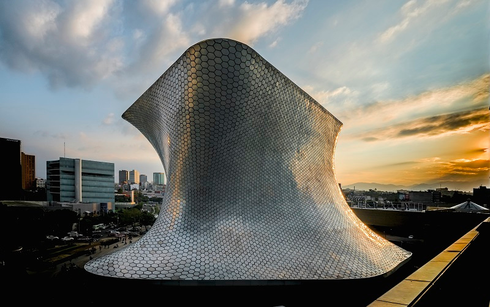

Client: LAR, Fernando Romero
Location: Polanco, Mexico City CDMX, Mexico
Type: Museum
Size: 153,924 sf
Team: LAR
Description:
Museo Soumaya is an art museum housing primarily European artwork located in the Polanco neighborhood of Mexico City. It has been described as the most avant-garde building in Mexico City.
Highlights: